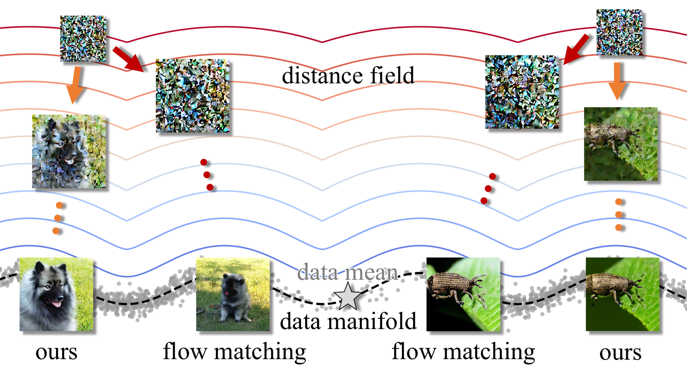
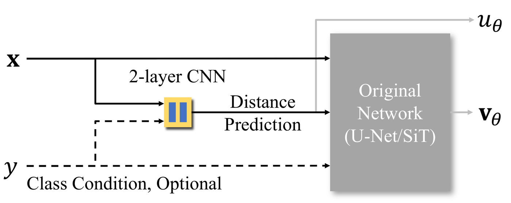
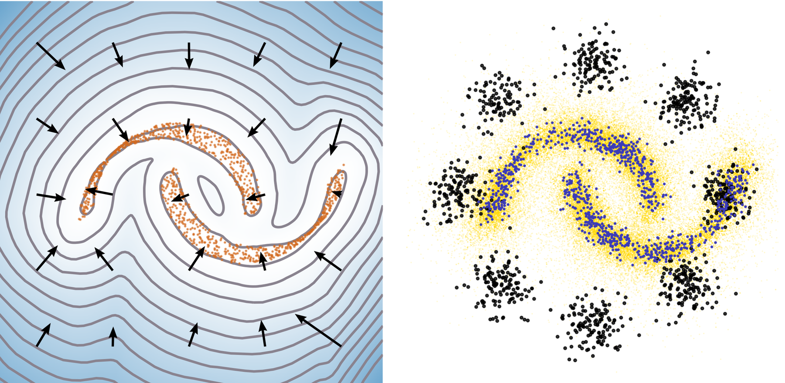
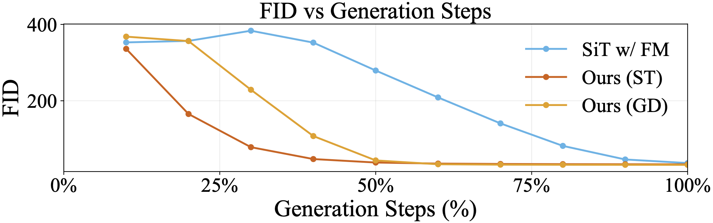
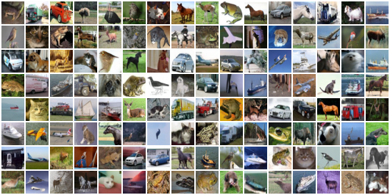
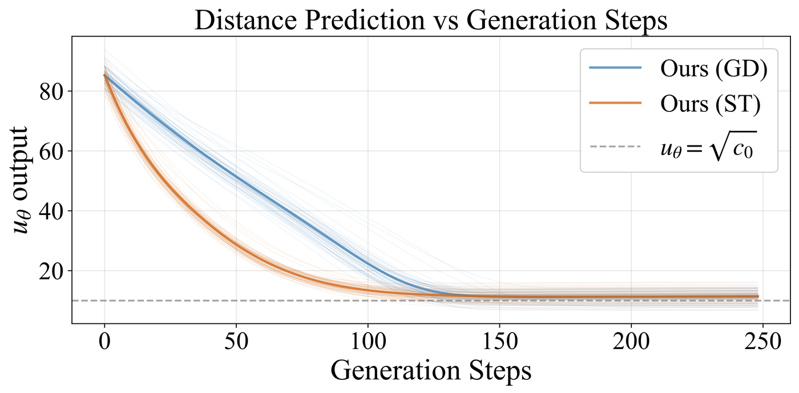

Abstract
Modern generative models based on diffusion or flow matching transport noise toward the data manifold, without representing the data manifold explicitly. We propose Distance Marching that explores an alternative design by explicitly modeling a distance field of the data manifold. A distance field offers a geometric view of generation as a descent process toward the data manifold using only the current position. The negative gradient of the distance field provides the direction, and the distance value can optionally determine the step size. However, sparse training data in high-dimensional space make it difficult to identify the closest points on the data manifold needed to train the distance field. To address this challenge, we design new loss functions that emphasize denoising targets from closer data points. Our analysis shows that, without time input, emphasizing closer targets reduces denoising ambiguity and the bias toward the data mean. This distance-field perspective naturally motivates two principled deterministic samplers, showing fast convergence in inference. As a result, our model is the only one without time input that remains competitive with time-conditioned models across datasets and architectures. Moreover, our distance prediction is also helpful for early stopping during sampling and for out-of-distribution detection. We hope distance-field modeling can open a promising direction for exploring generative modeling from a geometric perspective.
Method

The network sees only the noisy input \(\mathbf{x}\) and an optional class label \(y\), with no time input. A lightweight two-layer CNN head predicts the distance \(u_\theta(\mathbf{x})\) to the data manifold, and the unchanged backbone (U-Net or SiT) receives it through the slot that normally takes the time embedding, predicting the denoising direction \(\mathbf{v}_\theta(\mathbf{x})\). The head adds only 0.009%–0.19% parameters.
One-Step Loss
$$\frac{\big\lVert \mathbf{x} - u_\theta(\mathbf{x})\,\mathbf{v}_\theta(\mathbf{x}) - \mathbf{s} \big\rVert^2}{\lVert \mathbf{x}-\mathbf{s}\rVert^2 + \epsilon}$$The weight emphasizes data points closer to the query point, which mitigates the bias toward the data mean.
Directional Eikonal Loss
$$\Big\lVert \mathbf{v}_\theta(\mathbf{x}) - \frac{\mathbf{x}-\mathbf{s}}{\sqrt{\lVert \mathbf{x}-\mathbf{s}\rVert^2 + c_0}} \Big\rVert^2$$Disambiguates the offset \(C\) of the learned field as \(c_0\) by constraining the direction.
For each training pair \((\mathbf{x}, \mathbf{s})\), \(\mathbf{x}\) is the standard linear interpolation between Gaussian noise and a data sample \(\mathbf{s}\), drawn without reassignment. Starting from a Gaussian sample, either of two deterministic samplers moves toward the data manifold with step size \(\eta\):
Sphere Tracing
$$\mathbf{x} \leftarrow \mathbf{x} - \eta\, u_\theta(\mathbf{x})\, \mathbf{v}_\theta(\mathbf{x})$$Uses both the distance and the directional information.
Gradient Descent
$$\mathbf{x} \leftarrow \mathbf{x} - \eta\, \mathbf{v}_\theta(\mathbf{x})$$Uses only the directional information.

Results
CIFAR-10, unconditional
| Method | w/o \(t\) | FID ↓ |
|---|---|---|
| NCSN++ | 2.45 | |
| DDPM++ | 3.45 | |
| FM | 6.35 | |
| EDM | 1.99 | |
| 1-RF FM | 2.53 | |
| CLEL-large | ✓ | 8.61 |
| uEDM | ✓ | 2.23 |
| EM | ✓ | 3.34 |
| EqM | ✓ | 3.36 |
| Ours, gradient descent | ✓ | 2.54 |
| Ours, sphere tracing | ✓ | 2.23 |
ImageNet 256×256, with CFG
| Method | FID ↓ | IS ↑ |
|---|---|---|
| SiT | 7.66 | 254.77 |
| uEDM | 7.96 | – |
| EqM | 6.93 | 281.87 |
| Ours, sphere tracing | 6.59 | 310.02 |
| Ours, gradient descent | 6.67 | 311.31 |
Best results across different CFG scales (each metric at its own best scale); B/2 models, 50k samples, 250 steps.

Samples
Curated ImageNet 256×256 samples from our XL/2 model with CFG scale 4.0, applied to \(\mathbf{v}_\theta\) in gradient descent and to \(u_\theta \mathbf{v}_\theta\) in sphere tracing.
Explore the trajectories
Each of the 16 curated samples is generated from a fixed random seed and a class label in 250 steps. Select a sample to follow its trajectory: we project its 250 latent states onto their first three principal directions (as in the appendix of the paper, extended from two to three) and show level sets of the predicted distance \(u_\theta\) around the path, with the decoded image every 50 steps.
Uncurated samples for time- and class-unconditional generation on CIFAR-10.

Using the predicted distance

Adaptive stopping
Stopping gradient descent once \(u_\theta\) has increased for 10 consecutive steps cuts the average number of steps by 29.7% on ImageNet and improves sFID and IS, at the cost of a small FID increase.
| Steps ↓ | FID ↓ | sFID ↓ | IS ↑ | |
|---|---|---|---|---|
| Original gradient descent | 250.0 | 32.16 | 7.52 | 45.16 |
| Adaptive gradient descent | 175.8 | 32.73 | 6.70 | 45.86 |
Out-of-distribution detection
With CIFAR-10 as in-distribution data, the 0.010M-parameter distance head gives the best average AUROC, despite being three orders of magnitude smaller than prior energy-based models.
| Params | SVHN | Textures | Constant | Avg. | |
|---|---|---|---|---|---|
| PixelCNN++ | 54M | 0.32 | 0.33 | 0.71 | 0.45 |
| GLOW | 44M | 0.24 | 0.27 | – | 0.26 |
| IGEBM | 19M | 0.63 | 0.48 | 0.39 | 0.50 |
| EqM | 130M | 0.55 | 0.49 | 1.00 | 0.68 |
| Ours | 0.010M | 0.94 | 0.49 | 0.95 | 0.79 |
AUROC ↑, CIFAR-10 as in-distribution data. Baseline results from Yoon et al. (2023) and Wang & Du (2025).
BibTeX
@inproceedings{wang2026distancemarching,
title = {Distance Marching for Generative Modeling},
author = {Wang, Zimo and Mehta, Ishit and Lu, Haolin and Huang, Xunpeng and
Sun, Chung-En and Yan, Ge and Weng, Tsui-Wei and Li, Tzu-Mao},
booktitle = {Advances in Neural Information Processing Systems},
year = {2026}
}